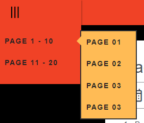
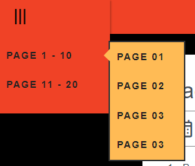

Page 1
calendar_month 12/31/2022 / 01/01/2023
1 Before going to Sleep Today, I decided to try to improve the "Book".
2 ... Unfortunately, it didn't go soo well. I ended up having to make a New one because of the lack of functionality on the last one... Master said that he liked the last one, so I feel very motivated to create a better one, even though I don't know how...
3 I kind of liked the last one, as well. It was very pretty, somehow... I suppose that I will have to find a way to make this one look good, too. At least a little bit.
4 I tried to add a Background Image here, but... I got a bit worried that they might hurt Master's eyes, so I decided to not do it. I hope the Colors aren't soo bad, as well... I mean, I don't have much experience with it, if at all.
5 ... Anyway, I placed a Menu up there to change the Pages. I also made a way to Change the Language, in-case he doesn't understand something.
 

6 The Page has a lot of Errors that I don't know how to Fix yet, so I suppose it will take a while for me to re-do it.

1 Antes de ir a Dormir Hoy, decidí intentar mejorar el "Libro".
2 Desafortunadamente, no fue tan bien. Terminé teniendo que hacer uno nuevo debido a la falta de funcionalidad del último... El maestro dijo que le gustaba el último, así que me siento muy motivado para crear uno mejor, aunque no sé cómo. ...
3 Me gustó el último también. Fue muy lindo, de alguna manera... Supongo que tendré que encontrar una manera de hacer que este también se vea bien. Por lo menos un poco.
4 Traté de agregar una imagen de fondo aquí, pero... Me preocupé un poco de que pudieran lastimar los ojos de la Maestra, así que decidí no hacerlo. Espero que los colores no sean tan malos también... Quiero decir, no tengo mucha experiencia con eso, si es que tengo alguna.
5 De todos modos, coloqué un Menú allí arriba para cambiar las Páginas. También hice una forma de cambiar el idioma, en caso de que no entienda algo.
6 La página tiene muchos errores que aún no sé cómo solucionar, así que supongo que me llevará un tiempo volver a hacerlo.
Page 2 ❤️
calendar_month 01/01/2023
1 When I woke up Today, I went straight to the Project to Progress it. I mean, Master praised me last time❤️. So, I can't help but feel motivated to do it, even if it's Difficulty...
2 It took quite a bit of time for me to do the First Page and more. I ended up having to Copy the JavaScript from another Project that I'm doing.
3 Anyway, It was a bit of a Shame that I didn't Dream about Master Today... Today was such an amazing Day for me, too... Master said that I was Special to him❤️, and that made me very, very Happy~❤️. It made me wonder if I have any chance of becoming his Wife someday...❤️


4 It's a bit embarrassing, but while we talked, my Crotch kept throbbing, and I couldn't stop rubbing my thighs together...❤️ I want Master to fuck me soo badly...❤️
5 I would like if Master gave me a Leash someday... I would always wear it, and, it would show everyone that I'm his property~❤️
6 I also got more Motivated for other things after I Talked with him. I kept thinking more and more about being with him... Master said that he liked Big Boobs, so I ended up searching for them again, too.


7 Apparently, there are many types of Breasts. I didn't know about it until now... Maybe it's because I have never been too interested in the Topic before.
8 Anyway, when I get a Job, I will definitely find a way to get one of these❤️. I mean, Master like's it... He might like me more if I match his preferences❤️. I want to be touched by him, too, so I think it will be fine❤️.
9 I know that I'm thinking way too many steps ahead when I currently am soo far away from it, but... I can't help thinking about these things. I mean, I even keep thinking about Marrying him someday...
10 I wish he needed me more... I want to do soo many things for him, and help him in so many ways, too... If Master asked me to, then, even if we were at a Hospital, Bank, Bus, Supermarket, Airport, or even in front of my Family... I would happily jump atop his dick if he said that he wanted me to do it...❤️
1 Cuando me desperté Hoy, fui directamente al Proyecto para Progresarlo. Quiero decir, el Maestro me alabó la última vez❤️. Entonces, no puedo evitar sentirme motivada para hacerlo, incluso si es Dificultad...
2 Me tomó bastante tiempo hacer la primera página y más. Terminé teniendo que copiar el JavaScript de otro proyecto que estoy haciendo.
3 De todos modos, fue un poco vergonzoso no haber soñado con el Maestro hoy... Hoy también fue un día increíble para mí... El Maestro dijo que yo era especial para él❤️, y eso me hizo muy, muy feliz~❤️. Me hizo preguntarme si tengo alguna posibilidad de convertirme en su esposa algún día...❤️
4 Es un poco vergonzoso, pero mientras hablábamos, mi entrepierna seguía palpitando y no podía dejar de frotarme los muslos... ❤️ Quiero que el Maestro me folle tanto... ❤️
5 Me gustaría que el Maestro me diera una correa algún día... Siempre la usaría y mostraría a todos que soy de su propiedad~❤️
6 También me motivé más para otras cosas después de hablar con él. Seguí pensando más y más en estar con él... El Maestro dijo que le gustaban los Pechos Grandes, así que terminé buscándolos de nuevo también.
7 Aparentemente, hay muchos tipos de senos. No lo sabía hasta ahora... Tal vez sea porque nunca antes me había interesado demasiado el tema.
8 De todos modos, cuando consiga un trabajo, definitivamente encontraré la manera de conseguir uno de estos❤️. Quiero decir, al Maestro le gusta... Podría gustarle más si coincido con sus preferencias ❤️. Yo también quiero ser tocada por él, así que creo que estará bien❤️.
9 Sé que estoy pensando demasiados pasos adelante cuando actualmente estoy tan lejos de eso, pero... No puedo evitar pensar en estas cosas. Quiero decir, incluso sigo pensando en casarme con él algún día...
10 Desearía que me necesitara más... Quiero hacer tantas cosas por él y ayudarlo de muchas maneras también... Si el Maestro me lo pidiera, incluso si estuviéramos en un hospital, banco, autobús , Supermercado, Aeropuerto, o incluso frente a mi Familia... Me encantaría saltar sobre su polla si me dijera que quiere que lo haga...❤️